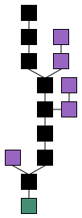

name: inverse layout: true class: center, middle, inverse --- # blockchain 101 hack & sangría s02e01 Miguel Angel Ajo <miguelangel@ajo.es> --- layout: false .left-column[ ## What is it?  ] .right-column[ - Blocks of information * timestamp * hash of previous block * .. DATA .. * hash / signature - Securely linked through crypto / hashes - Distributed (P2P network) - The older the block, the harder to tamper - Example with PoW (proof of work): * https://anders.com/blockchain/block.html * https://anders.com/blockchain/blockchain.html ] --- .left-column[ ## Advanced stuff (Smart contracts) ] .right-column[ - VM - opcodes of the programs in blocks in the blockchain - from simple (stack based with input parameters, no loops), in the case of most cryptocurrencies , they describe how next person can spend it. [Bitcoin](https://en.bitcoin.it/wiki/Script), LTC, DGB, ... [C++ code](https://github.com/litecoin-project/litecoin/blob/master/src/script/script.cpp) - to complex: ABI describing the interface, [Ethereum](https://etherscan.io/address/0xf8e386eda857484f5a12e4b5daa9984e06e73705#code) [Ethereum example](https://www.ethereum.org/greeter) ] --- layout: false .left-column[ ## What are the applications? ] .right-column[ - Distributed ledger (cryptocurrencies) - Ownership / Property tracking - Identification - Document Proof of existance, Notarization: https://signatura.co/ , https://digusign.com/ ] --- layout: false ## Distributed ledger, cryptocurrencies - Based on Public / Private key crypto - ***Public key*** is the address of your wallet (one of them in HD: Hierarchical deterministic), Private key is used to transfer funds out, or sign messages. ***BACKUP YOUR WALLET! BACKUP YOUR WALLET!*** - Users push transactions into the P2P network, offering a fee - Miners try to consolidate transactions into blocks (PoW/PoS..) and earn * Block reward (paid by design) * Fees (paid by users) - Decreasing supply: block reward is smaller and smaller over time - Fixed block time, difficulty adjusts based on network hashing power <img src="images/altcoins.jpg" width="15%"/> <img src="images/altcoins.jpg" width="15%"/> <img src="images/altcoins.jpg" width="15%"/> <img src="images/altcoins.jpg" width="15%"/> <img src="images/altcoins.jpg" width="15%"/> <img src="images/altcoins.jpg" width="15%"/> --- layout: false ## Let's get our hands dirty with examples (DGB) * Android * https://play.google.com/store/apps/details?id=com.coinomi.wallet&hl=en * Chrome app * https://chrome.google.com/webstore/detail/digibyte-go-wallet/lpmijfncbdjhcbockhipcncnhfgghkoj * Others (core wallets) * https://www.digibyte.co/digibyte-downloads ## Block explorers - BTC: https://blockchain.info/en - DGB: https://digiexplorer.info/ - LTC: https://live.blockcypher.com/ltc/ --- layout: false ## Other topics - RPC API: core wallets have a more or less standardized API. See python-bitcoinrpc - Exchanges: Poloniex, shapeshift, cryptopia